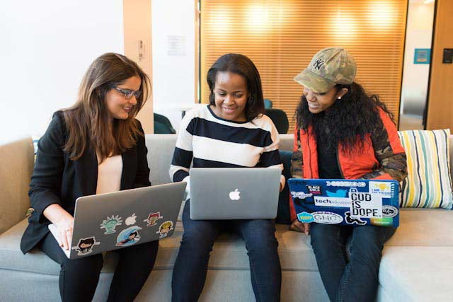

12 Mayıs 2026 | Başarı Hikayesi
Devamını Oku
Ahmet Amca ile Satranç Turnuvası Heyecanı
Gönüllümüz Mert, eski satranç şampiyonu Ahmet Amca ile haftalık buluşmalarını anlatıyor.
Devamını Oku

20 Mayıs 2026 | Duyuru
Devamını Oku
Aylık Gönüllü Oryantasyonumuz Gerçekleşti
Ailemize yeni katılan 40 kahraman gönüllümüz ile saha güvenliği ve ilk yardım eğitimini tamamladık.
Devamını Oku

28 Mayıs 2026 | Rehber
Devamını Oku
Büyüklerimiz İçin Yaz Aylarında Beslenme Önerileri
Sıcak havalarda sıvı tüketimi ve hafif beslenme hakkında uzman diyetisyenimizden tavsiyeler.
Devamını Oku

02 Haziran 2026 | Gönüllü Günlüğü
Devamını Oku
İlk Sahaya Çıkış Heyecanım: Caner'in Kaleminden
Yazılım Geliştirici gönüllümüz Caner, platformu ilk kez sahada nasıl deneyimlediğini paylaşıyor.
Devamını Oku
10 Haziran 2026 | Teknoloji
Devamını Oku
Akıllı Telefon Atölyemizin İkincisi Başlıyor
Büyüklerimizden gelen yoğun talep üzerine e-Devlet ve Görüntülü Arama atölyemizin yeni sınıfı açıldı.
Devamını Oku

15 Haziran 2026 | Basın
Devamını Oku
Samsun Üniversitesi ile Yeni İşbirliği Protokolü
Gönül Köprüsü projemiz, üniversite öğrencilerinin topluma hizmet uygulamaları resmi müfredata girdi.
Devamını Oku